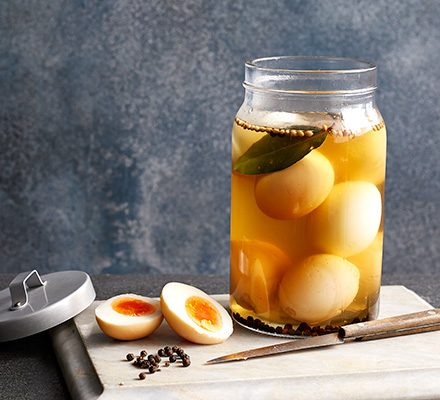

Pickled eggs

Description
Love pickled eggs? It's easy to make them, and you can add spices like chilli flakes, turmeric, curry powder or mustard seeds to flavour and colour them.
Ingredients
- 400ml white wine vinegar
- 100g caster sugar
- 2 bay leaves
- 1 tbsp black peppercorns
- 1 tbsp coriander seeds
- 6 large eggs
Steps
-
Put the vinegar, sugar, bay, spices, ½ tbsp salt and 150ml water in a small pan and heat for a few mins until the sugar dissolves.
-
Leave to cool completely while you boil the eggs.
-
Bring a large pan of water to the boil, lower in the eggs with a slotted spoon and set a timer for 10 mins.
-
Once the timer goes off, immediately plunge the eggs into ice cold water and leave to cool
-
Gently tap the eggs on the work surface and peel off the shells.
-
Put the boiled eggs in a sterilised jar where they all fit, about 1 litre, and pour over the cooled pickling liquid to cover.
-
Seal and leave in a cool, dark place for at least two weeks, or up to three months.
-
Once opened, keep in the fridge and eat within two weeks.
Return to main page